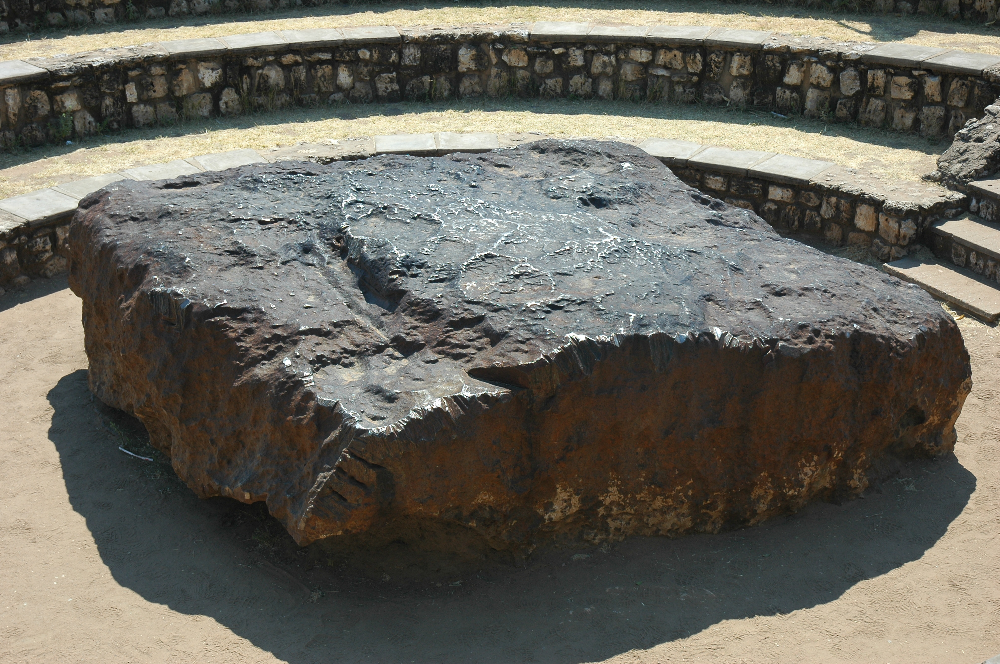

Did you know that minerals delivered to Earth in meteorites more than 4 billion years ago have long been advocated as key ingredients for the development of life on our planet.
Scientists believed minimal amounts of these minerals were also brought to early Earth through billions of lightning strikes. Cool right
But now researchers from the University of Leeds have established that lightning strikes were just as significant as meteorites in performing this essential function and allowing life to manifest.
They say this shows that life could develop on Earth-like planets through the same mechanism at any time if atmospheric conditions are right.
The research was led by Benjamin Hess during his undergraduate studies at the University of Leeds in the School of Earth and Environment.
|
meteorites
A meteorite is a solid piece of debris from an object, such as a comet, asteroid, or meteoroid,
that originates in outer space and survives its passage through the atmosphere to reach the surface of a planet .
Stony meteorites that are rocks, mainly composed of silicate minerals;
iron meteorites that are largely composed of metallic iron-nickel, briefly they contains a large amounts of both metallic and rocky material.

|
{kind=link}